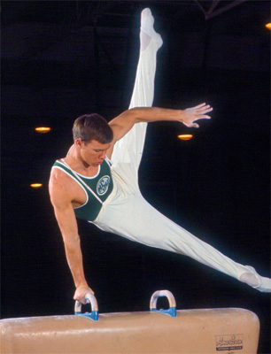

Dave Thor (USA)
1967 Pan American Games AA Bronze Medalist
1968 Olympian

Dave was born on February 20, 1947 in Southern California.
Competition Results
1964
Los Angeles High School City Championships: 3rd Team, 1st AA, 1st FX, 1st PH 1st PB
1965
Midwest Open: 2nd AA
1966
NCAA Championships: 3rd Team, 6th FX
USGF Championships: 6th AA
1967
Pan American Games: 1st Team, 3rd AA, 3rd FX, 3rd PH, 3rd HB
1968
NCAA Championships: 3rd AA, 2nd PH, 4th FX, 4th HB, 5th V
Olympic Games: 7th Team, 24th AA
US Olympic Trials: 2nd AA
1969
AAU Championships: 1st PH
Copa de las Americas: 1st AA, 1st FX, 1st PH, 1st PB, 2nd V, 2nd HB
USGF Championships: 3rd AA
World Cup: 6th AA
1970
South African Cup: 2nd AA
This page was created on April 11, 2020.
© Gymn Forum